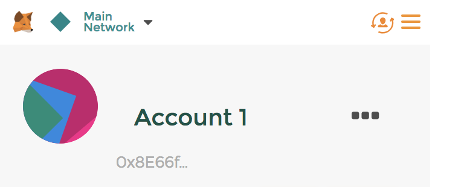
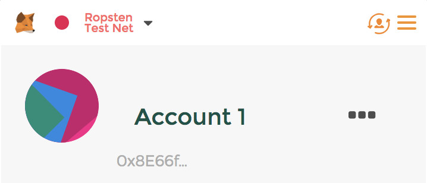

Welcome to BlockReferendum!
Allowing direct democracy to exist in the modern age through the power of the Ethereum blockchain.
Before you get started you are going to need to be on Chrome and install Metamask from here: https://metamask.io/. Metamask will allow you to interact with the Ethereum blockchain and in turn, this website. Once that is set up you will see a little fox in the top right part of your browser. Click on it and set up your account.
Click on the fox again and notice that at the moment your metamask account should look something like this, now click on the dropdown list that says main network and click on the red Ropsten Test Net.
Notice that Ropsten Test Net is now in the top left of your account window. This allows you to interact with the contract that I have created on the test net. Now all you need is some ethereum. There are two possibilities here. The first and easiest method is to email me: zparis@princeton.edu. Before doing so though go back to your Metamask account tab and click on the three dots to the right of "Account 1". Then click copy address to clipboard. After that just send me an email with that address and I will send some ethereum to you. Note: The ethereum on the Ropsten Test Net is not worth anything so it will say that you are receiving a large sum of money but it actually isn't worth anything. The second is to click on the buy button then under select service click Ropsten Test Faucet. When there click on the request "1 ether from faucet" button a few times and after a few minutes you should receive the ether.
After all that, reload the page and the "Enter the Voting Booth" button should be clickable.